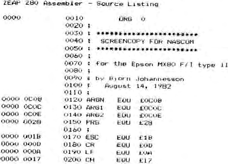

ScreenCopy
by B. Johannessen
After reading an article in Computing Today written by Don
Thomasson, I got an idea to write a program which can copy the
contents of the Nascom screen directly to an Epson MX80 F/T type
2 printer by means of ‘Bit Image Mode’.
Graphics and alphanumerics are directly transferred and you
can choose between black on white or white on black.
The usual MX80 F/T type 1 may only be used if it is equipped
with GRAFTAX. The GRAFTAX may need some other initialisation.
The first thing to be done is to place a copy of the Nascom
Character and NAS-GRA EPROMs into the Nascoms memory space. In
my case it resides from 9000H to 9FFFH.
The main program resides in ROM from A000H . To start the
copy I have used the L command in Nas-sys and altered it to
point to A000H and if I add an ‘F’ as ARG1, the copy will be
inverted. The program can also be called from BASIC with a USR
routine call to A003H.
The problem I had in writing the program was that the Nascom
characters have 16 lines and the printer only has 8 needles in
‘bit image made’. The printer has to go 2 lines for each Nascom
line so I had to use a buffer to store the ‘bit image’ of one
Nascom line before it is sent to the printer.
The program contains its own printer routine since my usual
routine rejects linefeed code 0AH.
